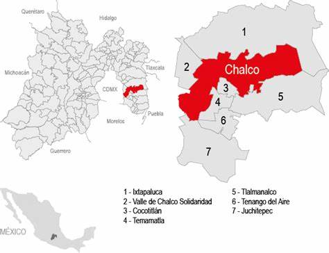

Chalco es uno de los 125 municipios en que se encuentra dividido el estado de México, localizado en el oriente del estado y parte de la Zona Metropolitana del Valle de México.6 Su cabecera es la ciudad de Chalco de Díaz Covarrubias.
El municipio de Chalco se encuentra localizado en el sector oriente del Estado de México, es decir, el ubicado entre la Ciudad de México y el estado de Puebla, forma parte por tanto del Valle de México y se extiende hasta las primeras elevaciones de la Sierra Nevada, que divide al Valle de México del Valle de Puebla-Tlaxcala y en el que destacan las cumbres nevadas de los volcanes Iztaccíhuatl (5268 m s. n. m.) y el Popocatépetl (5452 m s. n. m.). La extensión territorial del municipio es de 234.89087672 kilómetros cuadrados, siendo sus coordenadas extremas 19° 09' - 19° 20' de latitud norte y 99° 41' - 99° 58' de longitud oeste, su altitud fluctúa de los 2 500 metros sobre el nivel del mar en el valle hasta alcanzar una máxima de 3 400 metros en las montañas del este del municipio. Limita al norte y al este con el municipio de Ixtapaluca, al sureste con el municipio de Tlalmanalco, al sur con los municipios de Cocotitlán y Temamatla, al suroeste con el municipio de Juchitepec y el noroeste con el municipio de Valle de Chalco Solidaridad; al oeste limita con la Ciudad de México, en particular con las Demarcaciones Territoriales Tláhuac y Milpa Alta.
Su uso fue como parroquia y convento, y actualmente sigue siendo usada como parroquia, fue construida en los siglos XVI al XVIII. Datos históricos: Del convento erigido en 1585, sólo se conserva una parte de la portería y el claustro que fue reconstruido. Sobre el Templo primitivo se erigió en 1650 un edificio fiscal y en 1780 terminó la portada. El convento y la iglesia fueron construidos originalmente en dimensiones modestas. Se hallaban cerca de los muelles del lago y fueron construidos en 1585. Esta iglesia fue dedicada por los evangelizadores franciscanos en 1585 y se restauró en 1780.
Su uso ha sido siempre de templo, fue construido en el siglo XVIII (marzo de 1865) y se restauró en el interior en 1982.
Siempre ha sido utilizado como panteón desde su construcción en el siglo XVII.
Este casa cultural, que se encuentra en el centro histórico de la cabecera municipal, debe su nombre a Domingo Francisco Chimalpahin Quauhtlehuanitzin,19 un noble Chalca e historiador de la región que vivió en el siglo XVI. El espacio, inaugurado en 1978 y catalogado como patrimonio cultural del Estado de México, es el tercer centro cultural más grande de la zona oriente de dicha entidad.
En un principio, el centro albergaba un museo regional, junto con algunos talleres culturales. Actualmente, ofrece talleres de danza, cartonería, música, y cursos de capacitación para artesanos; a este respecto, se cuenta con el padrón de artesanos más grande del Estado de México, por lo que el municipio es considerado como la "Capital de la Cultura y las Artes".
Originalmente instalado en una pequeña casa, con el paso del tiempo dicho espacio resultó insuficiente para los talleres que albergara dicho recinto. Por esta razón, el centro cultural fue totalmente restaurado, haciéndose entrega formal del inmueble renovado el 10 de abril de 2014.
Los talleres ofrecidos actualmente en el Centro Chimalpahin son: